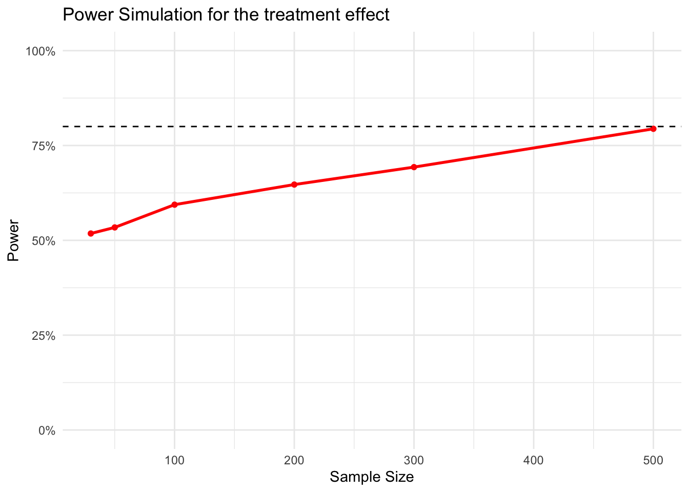

── Attaching core tidyverse packages ──────────────────────── tidyverse 2.0.0 ──
✔ dplyr 1.1.4 ✔ readr 2.1.5
✔ forcats 1.0.0 ✔ stringr 1.5.1
✔ ggplot2 3.5.1 ✔ tibble 3.2.1
✔ lubridate 1.9.3 ✔ tidyr 1.3.1
✔ purrr 1.0.2
── Conflicts ────────────────────────────────────────── tidyverse_conflicts() ──
✖ dplyr::filter() masks stats::filter()
✖ dplyr::lag() masks stats::lag()
ℹ Use the conflicted package (<http://conflicted.r-lib.org/>) to force all conflicts to become errors
library(broom)
Background
This section is an introduction, in which you very briefly line out the motivation of your research project. Copy-paste the introduction of this assignment in this section. Search the references, store them in Zotero and cite them properly at the correct location in this quarto document.
Malaria is one of the world’s foremost public health concerns. In 2023, there were almost 263 million estimated malaria cases, of which 569,000 resulted in death. While there are 83 malaria endemic countries, the majority of cases occur in sub-Saharan Africa (see the 2024 WHO Malaria report). Malaria is associated with poverty: the poor are most affected, potentially because they have reduced access to medical services and information, and can’t avoid working in malaria epidemic areas. Even if it does no lead to death, malaria can have serious consequences, both in terms of health and economic situation. Fighting Malaria is therefor an important public policy goal. One “core intervention” to prevent Malaria infections are insecticide-treated nets (ITNs).
Economists have debated whether ITNs should be distributed for free, or at a small price. Charging a small price, according to some theories, might be expected to encourage the use of malaria bed nets–a bit as if paying a gym membership makes you go to the gym, simply because you paid for it (see e.g. Thaler 1980). However, past research has shown that it is more effective to distribute the nets for free: In an RCT, Cohen and Dupas (2010) let prenatal clinics distribute ITNs to pregnant women. In some of clinics–randomly selected–the bed nets were for free. In others, they were charged a small price. Contrary to what proponents of pricing would have predicted, the study found that those who paid a little did not use bed nets more than those who got it for free, nor were there any differences in health. There was, however, a crucial difference: Making the bed nets available even at a small price drastically reduced the number of women who got one (by almost 60 percentage points, from 99% in the free group to 41 percent in the small price group).
Hypotheses
In this section, you try to state as clearly as possible what you want to test. What is the prediction that you have, based on what you know from the literature in the previous section? This should be very short, a single sentence.
Our hypothesis is that charging a small price will result in reduced update of bednets, compared to charging no price.
Research design
This is where you describe the methods of your study. Fill out the different sub-sections.
Procedure
Describe the experimental procedure, and in particular your treatment. How would you run the experiment?
We could imagine a design similar to the reference study, in which patients in clinics get offered the possibility to acquire ITNs. We randomize whether a clinic offers the bed nets for free (treatment condition), or at a small price (control condition).
Measures
Briefly describe your outcome measure. Use a binary outcome (you could, e.g., call it “uptake”, with values “uptake” vs. “no_update”).
Our outcome measure is “uptake”, with values “uptake”, in case a patient acquired an ITN, or “no_update”, in case a patient did not.
Analystical Procedure
Describe exactly which statistical model you will use to evaluate your hypothesis. Insert this model in the below code chunk (the option “evaluate: false” ensures that when rendering the dokument, R inores this code - otherwise it would yield an error, since you haven’t specified any data. Use a linear regression, with the treatment as predictor variable, and uptake as the outcome variable. Since we have a binary outcome, there are other, often more appropriate models than a simple linear regression, but for simplicity, we stick to what you have learned.
lm(uptake ~ condition, data = sample)
Pariticipants
In this section, you describe your participants (where will they be from, how will you recruit them? Be creative, and keep in mind that you want to have a different population than pregnant women in Kenya, as in the reference paper). Importantly, determine your sample size. Assume that the minimal effect you care about is a difference in uptake of 10 percentage points (remember that in the reference study in Kenya, it was 60%, so that seems a conservative lower bound). You want to be able to detect such an effect with a power of 0.8, given a significance threshold of 0.05. Run a power simulation. Refer to the different steps in the guide on power simulation, and the lecture slides of the exercise in the class on linear regression. Take the sample generating function below as a starting point. The final result should be a figure with a power curve. Reference the figure in your text following the Quarto cross-references guidelines.
To have a different, more generalizable sample, we could try to run our experiment in general (not only prenatal) clinics, on all patients (not only pregnant women), in several countries in sub-Saharan Africa (not only Kenya)1.
# set a seed for reproducibilityset.seed(239875)
generate_sample <-function(sample_size){tibble(# an id for each participantid =1:sample_size,# randomly assign a treatmentcondition =sample(c("free", "small_price"), size = sample_size, replace =TRUE) ) |># calculate the outcomemutate(# We assume a treatment effect of 10 percentage points, # 95% in the free group and 85% in the control group.# We add a little bit of noise to these average probabilities for each # individualprob =case_when( condition =="free"~rnorm(sample_size, mean =0.95, sd =0.5), condition =="small_price"~rnorm(sample_size, mean =0.85, sd =0.5) ),# Because of the noise, some values might be out of the bounds (probabilites can only range from 0 to 1). # The next line ensures to keep probabilities within [0, 1] bounds. prob =pmin(pmax(prob, 0), 1),# Finally, we can simulate our binary uptake variable based on the noisy probabilitiesuptake =rbinom(n(), size =1, prob = prob) )}
For the power analysis, you will need to write several functions. Remember to test your function after each step.
Next, we write a function to run our regression model on the sample.
calculate_regression <-function(sample){# run a regression on the sample p.value <-lm(uptake ~ condition, data = sample) |>tidy() |>filter(term =="conditionsmall_price") |>pull(p.value)return(p.value)}# test# test_sample <- generate_sample(sample_size = 100)# calculate_regression(sample = test_sample)
We then write a function to simulate multiple samples.
generate_samples <-function(n_simulations, sample_size) {# Make an empty vector p.values <-numeric(n_simulations)for (i in1:n_simulations) {# Draw a sample with the specified size sample <-generate_sample(sample_size) # Get an estimate p.values[i] <-calculate_regression(sample) }return(p.values)}# test# generate_samples(n_simulations = 100, sample_size = 10)
For a given sample size, we can calculate statistical power with this funciton.
First, we need a function to calculate power.
calculate_power <-function(p.values){# get statistical power power <-data.frame(p.values) |>mutate(significant =ifelse(p.values <=0.5, TRUE, FALSE)) |>summarize(share_significant =sum(significant) /n()) |>pull(share_significant)return(power)}# test# some_p.values <- generate_samples(n_simulations = 100, sample_size = 10)# calculate_power(p.values = some_p.values)
We write a function to run the power analysis for different sample sizes.
power_simulation <-function(sample_size, n_simulations =1000) {# Generate multiple samples and compute estimates sampled_p.values <-generate_samples(n_simulations, sample_size)# Calculate statistical power power <-calculate_power(sampled_p.values)# Return resultsreturn(tibble(sample_size = sample_size,n_simulations = n_simulations,estimated_power = power ))}# test# power_simulation(sample_size = 30, n_simulations = 100)
We then run the power simulation for a bunch of sample sizes.
sample_sizes <-c(30, 50, 100, 200, 300, 500)# make an empty data framepower_data <-tibble()for (i in sample_sizes) {# run power simulation power <-power_simulation(sample_size = i, n_simulations =1000) power_data <-bind_rows(power_data, power)}
We can then plot the power curve.
ggplot(power_data, aes(x = sample_size, y = estimated_power)) +geom_point(color ='red', size =1.5) +geom_line(color ='red', size =1) +# add a horizontal line at 80%geom_hline(aes(yintercept = .8), linetype ='dashed') +# Prettify!theme_minimal() +scale_y_continuous(labels = scales::percent, limits =c(0,1)) +labs(title ="Power Simulation for the treatment effect",x ='Sample Size', y ='Power')
Warning: Using `size` aesthetic for lines was deprecated in ggplot2 3.4.0.
ℹ Please use `linewidth` instead.

Figure 1: The Figure statistical power as a function of sample size, given an effect of 10 percentage points, random noise, and an alpha level of 0.05 for statistical significance. We simulated 1000 samples per sample size.
Our power simulation (Figure 1) suggests that with 500 participants, we reach our desired power level of 80%.
References
At the end of your document, Quarto will automatically list your references.
References
Cohen, Jessica, and Pascaline Dupas. 2010. “Free Distribution or Cost-Sharing? Evidence from a Randomized Malaria Prevention Experiment*.”The Quarterly Journal of Economics 125 (1): 1–45. https://doi.org/10.1162/qjec.2010.125.1.1.
Thaler, Richard. 1980. “Toward a Positive Theory of Consumer Choice.”Journal of Economic Behavior & Organization 1 (1): 39–60.
Footnotes
Of course, this is quite a bit of wishful thinking, since these things cost a lot of money and are hard to administer. Just take it as an example of the different factors that you might want to think about, in terms of who your population is.↩︎